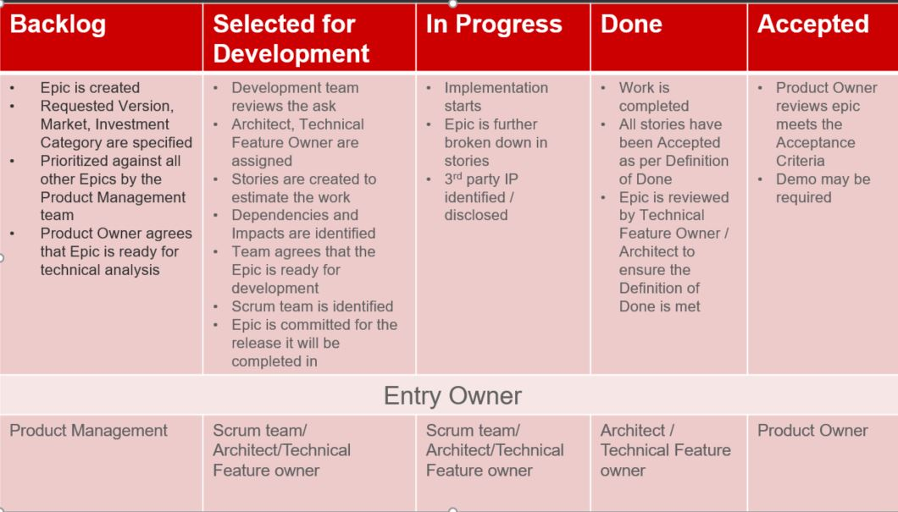

Feature Grooming and Workflow¶
THIS PAGE IS CURRENTLY SERVING AS A PLACEHOLDER. IN PROGRESS for updates.
Purpose: Teams are expected to actively track and groom their Feature backlog. Prior to any release, the team is asked to commit to the content that they will release. This document provides information on how to access Feature backlogs, expected grooming outcomes, and guidelines.
(Source: https:https://jive.windriver.com/docs/DOC-63399)
Important References:¶
Accessing the VxWorks Feature Backlog
The VxWorks Feature Backlog is access via Jira: https://jira.wrs.com/
Access to:
Feature Backlog¶
All Boards are managed via Jira filters
Filters can be used based on Scrum Team, Features status
Modify columns to show desired information
Save your view for easy access later (optional)
All epics are created in the Program Project eg., VxWorks Program Project
Workflow

Notes:
Backlog state, Entry Owner: Engineering may also create Epics for design improvements, technical debt reduction, or to break a large Epic into smaller phased deliveries
Accepted state, Entry Owner: Engineering may accept Epics that are Engineering originated, or if requested by Product Management/Product Owner.
Feature Grooming¶
Teams should be looking at the VxWorks Feature backlog regularly
Suggested cadence is every week
The following are grooming guidelines, and information teams should be providing:
Grooming Features that are in Backlog
Identify whether or not the team should own the Feature
If the team has the expertise and bandwidth to potentially deliver the Feature, assign its “Scrum Team”
Provide t-shirt sizing in the “Preliminary Estimate” field
Grooming Features that are in Selected for Development
User Stories are created to estimate the work
Ensure the Product Architect has been identified
PA owner field populated
Ensure Dependencies / Impact are identified
Impact / Dependencies field is updated
Have discussions with PA on requirements
PA updates “PA-tracking” field to indicate readiness of feature
Technical Feature Owner is identified
Epic is committed
Planning / Committed Version field is updated
This can be different than the Requested Version
Grooming Features that are in In Progress
Breakdown into USs as much as possible (this should be done iteratively from week to week and as new information is discovered)
Implementation starts
Discuss progress
Feature Workflow¶
Epics are created in Backlog
Product Manager creates the epics
After grooming, the Scrum Team / Technical Feature Owner/ Architect, move the epic in Selected for Development
See Grooming Features that are in Selected for Development
When all the stories met the Definition of Done, they are reviewed to ensure that Acceptance Criteria are met.
Product Architect / Technical Feature Owner are accepting the stories
When all the stories are Accepted, the Epic is automatically moved to Done
Once in Done, the Product Owner and Product Architect review the Acceptance Criteria, and if met, moved the epic to Accepted
Demo may be required
Change Log¶
Date |
Change Request ID |
Version |
Change By |
Description |
05/21/2020 |
N/A |
0.1 |
Shree Vidya Jayaraman |
Initial Draft |
06/29/2020 |
N/A |
0.2 |
Shree Vidya Jayaraman |
Updates based on Rodger’s feedback |